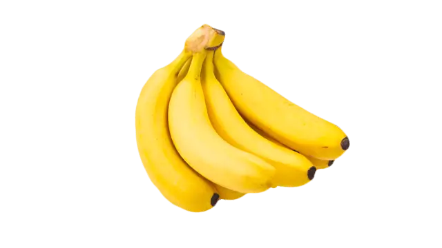
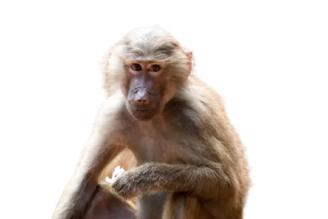

Bananar eru eitt af vinsælustu ávöxtunum í heiminum. Þeir eru auðvelt millimál, því þeir koma með eigin „umbúðum“ og þarf ekki að skera þá eða þvo. Banani er rík uppspretta kalíums sem styrkir vöðva og hjálpar líkamanum að starfa eðlilega. Þeir innihalda einnig trefjar og náttúrulegan sykur sem gefur skjótan og hollan orkuskot. Oft eru bananar borðaðir ferskir, en einnig notaðir í bakstur, s.s. bananabrauð, eða í smoothie og graut. Þeir eru ódýrir, aðgengilegir og nýtast vel í daglegu mataræði fyrir bæði börn og fullorðna. Auðvelt er að taka banana með í nesti, hvort sem er í skóla, vinnu eða ferðalag. Þeir eru líka frábærir í íþróttadrykkjum og sem hressing eftir æfingu. Börn elska bragðið og foreldrar kunna að meta næringargildið. Banani er sannarlega fjölhæfur ávöxtur sem hentar öllum aldurshópum og lífsstílum.
Apar elska banana. Í frumskógum sveifla þeir sér milli trjáa með banana í hendi. Þeir borða þá með ánægju, fá orku og betri meltingu. Banani örvar leikni og félagshegðun. Sambandið er náttúrulegt og næringarríkt. Apar og bananar—fullkomin samsetning sem nærir líkama og sál.
Apar eru klárir spendýr með flókna hegðun. Þeir lifa í hópum, nota hljóð og látbragð til samskipta og verkfæri til lausna. Frá simpönsum til górilla sýna þeir tilfinningar og félagsfærni. Þeir deila stórum hluta erfðamengis okkar og gefa innsýn í þróun mannsins og uppruna hans.
.webp)
Bananar eru meðal vinsælustu ávaxta heimsins og vaxa á stórum jurtum sem líta út eins og tré, en eru í raun fjölærar plöntur. Þeir þrífast best í heitu, rökum loftslagi og eru aðallega ræktaðir í löndum nálægt miðbaug, eins og Ekvador, Indlandi og Filippseyjum. Bananaplöntur vaxa hratt og geta gefið af sér ávöxt innan árs frá gróðursetningu. Ræktunin krefst mikillar vatnsnotkunar og stöðugrar umönnunar, þar sem plönturnar eru viðkvæmar fyrir veðri og sjúkdómum. Bananar eru skornir af í klösum og fluttir til neytenda um allan heim, oft áður en þeir eru fullþroskaðir. Þeir þroskast síðan á leiðinni og eru tilbúnir til neyslu við komu. Í auknum mæli er lögð áhersla á sjálfbæra bananaræktun, þar sem umhverfisáhrif og aðbúnaður verkafólks eru teknir með í reikninginn. Banani er ekki aðeins ljúffengur heldur einnig tákn um hnattræna tengingu og mikilvægi siðferðilegrar neyslu.